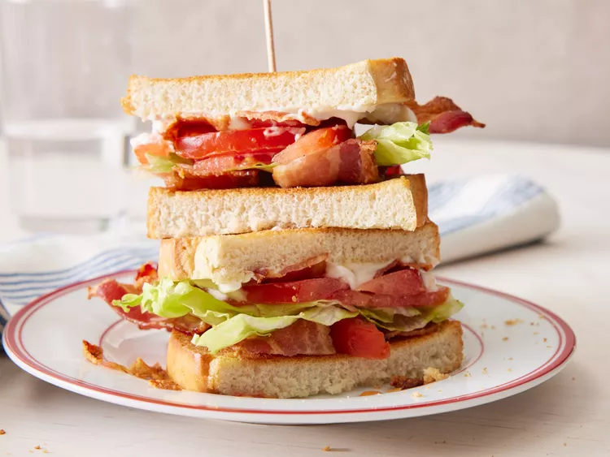

BLT Sandwich

This BLT is classic: bacon, lettuce, and tomato; nothing fancy, just delicious.
Crispy bacon, juicy tomatoes, fresh lettuce all tucked between two slices of bread.
The crunchniness of the cabon perfectly complements the refreshing bite of the lettuce
and the sweet tang of the tomato. It's a classic for a reason.
Ingredients
- 4 slices bacon
- 2 leaves lettuce
- 2 slices tomato
- 2 slices bread, toasted
- 1 tablespoon mayonnaise
Steps
- Gather all ingredients.
- Cook bacon in a large, deep skillet over medium-high heat until evenly browned, about 10 minutes. Drain bacon on a paper towel-lined plate.
- Arrange cooked bacon, lettuce, and tomato slices on one slice of bread. Spread mayonnaise on the other slice of bread.
- Close to make a sandwich.